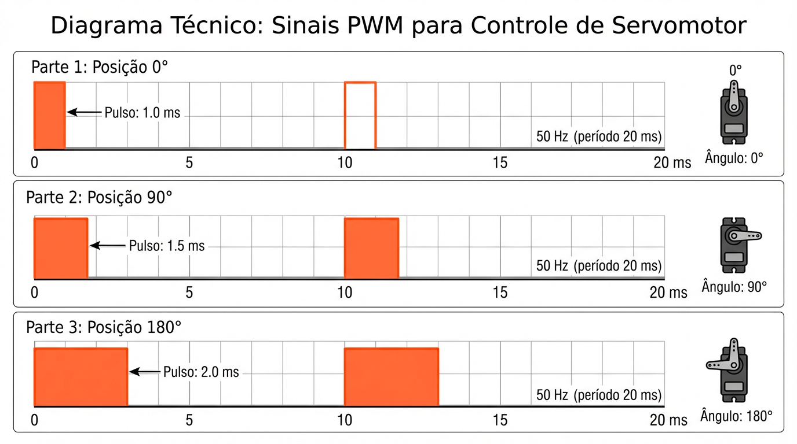

Faculdade de Tecnologia do Senac (FATESE)
Curso: Análise e Desenvolvimento de Sistemas
Aula 05 — Atuadores e PWM
Base teórica — sinal de comando
Controle de servo por PWM
(padrão hobby)
O que muda no servo?
No servomotor, normalmente mantemos a frequência fixa e variamos a largura do pulso. O período típico é 20 ms (≈ 50 Hz).
Período
T ≈ 20 ms
Pulso
~1,0–2,0 ms
Efeito
Ângulo (0°–180°)
Mapa típico (aproximado)
1,0 ms → ~0° •
1,5 ms → ~90° •
2,0 ms → ~180°
O mapeamento varia por modelo (consulte datasheet ou ajuste por teste).
Diagrama do sinal (50 Hz)
Período fixo de 20 ms. O que muda é o pulso.

Pulso
1.0 ms
Ângulo ≈ 0°
Pulso
1.5 ms
Ângulo ≈ 90°
Pulso
2.0 ms
Ângulo ≈ 180°
Dica de implementação
Em Arduino/ESP32, a biblioteca ESP32Servo faz essa conversão (ângulo → largura do pulso).
Em hardware real
Servos podem puxar corrente alta. Use fonte dedicada e mantenha terra comum (GND) com o ESP32.
Conceito-chave: para servos, o importante é a largura do pulso (em ms) em um período fixo (50 Hz).
50 Hz
1–2 ms
0°–180°